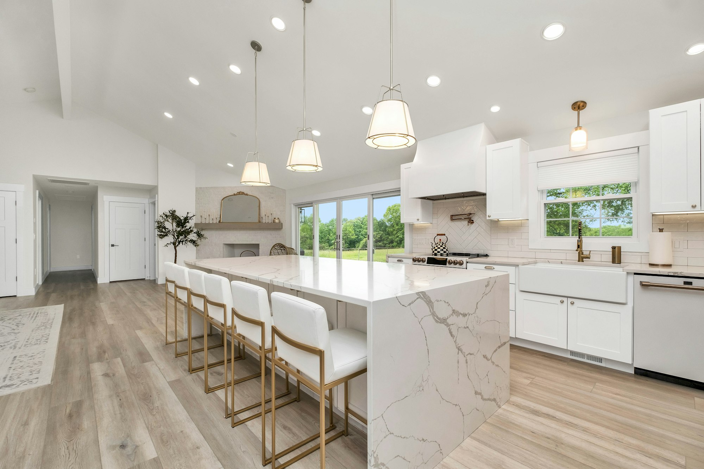
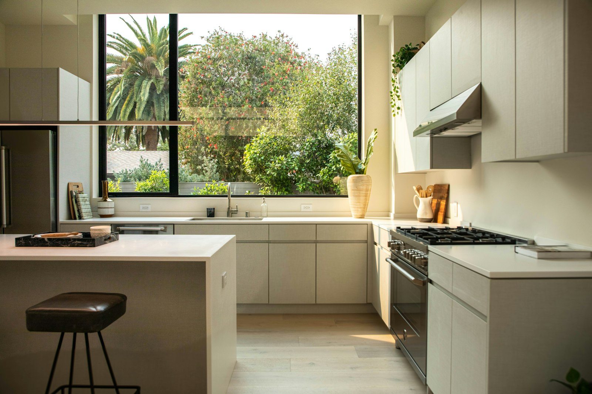
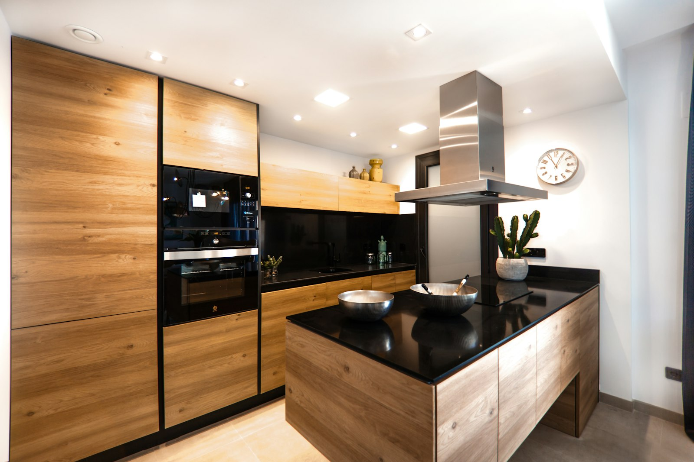
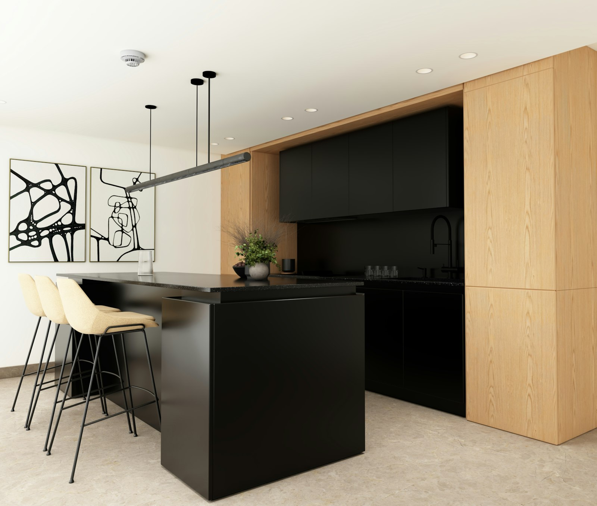
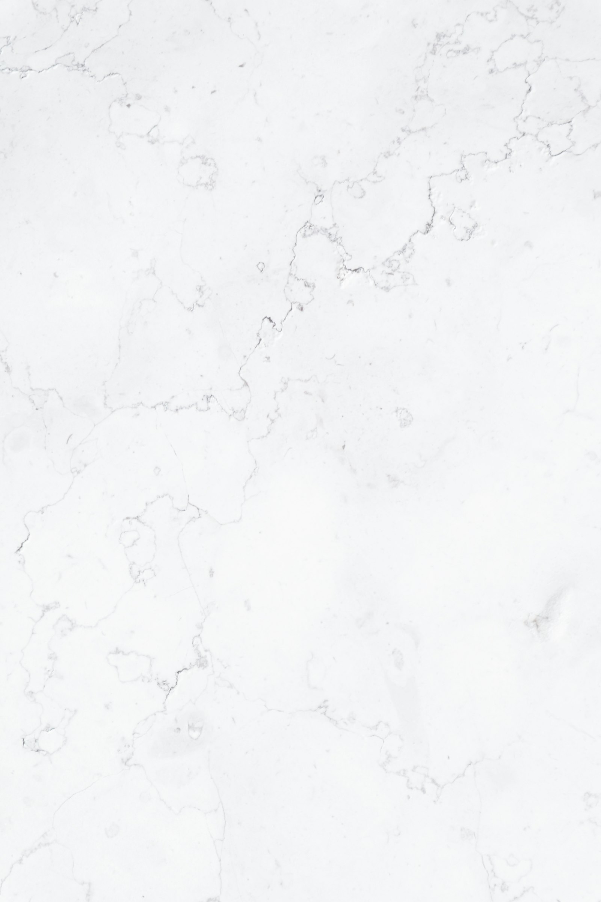
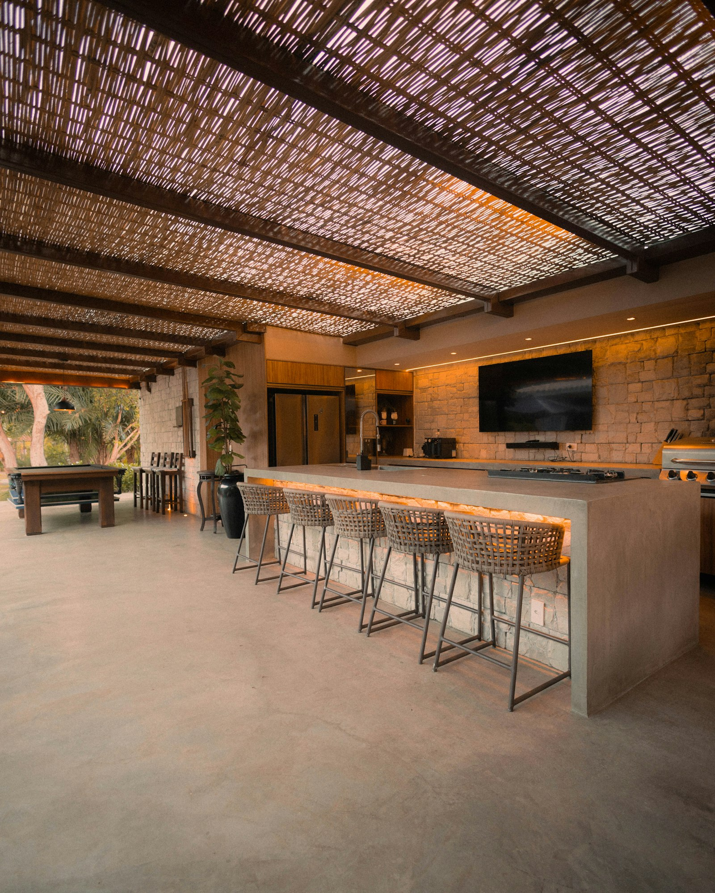
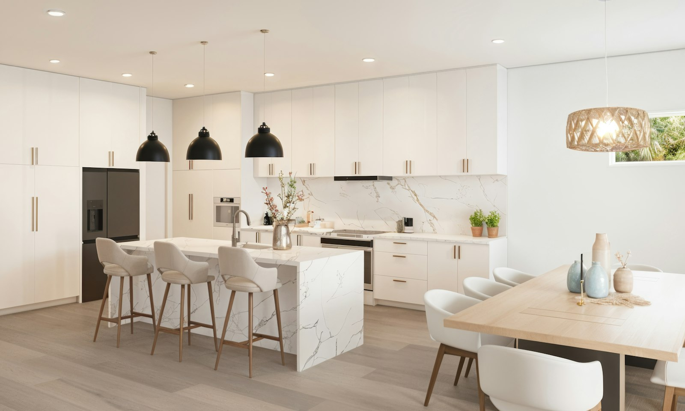
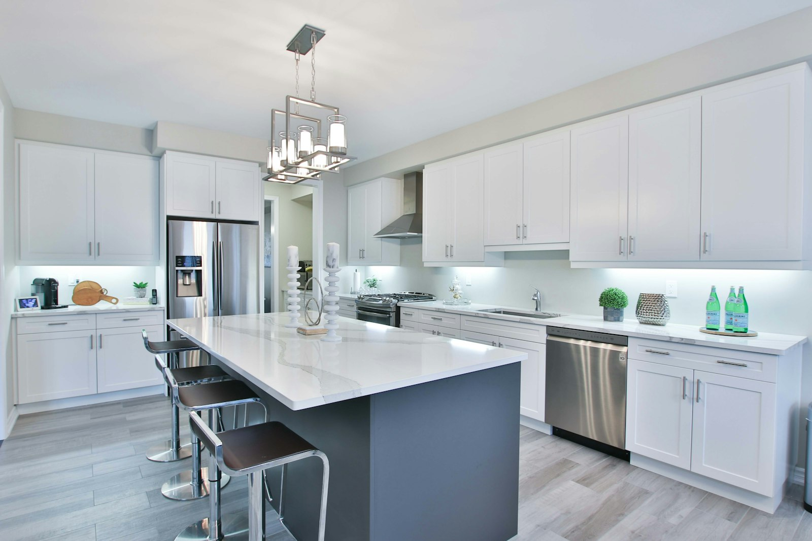
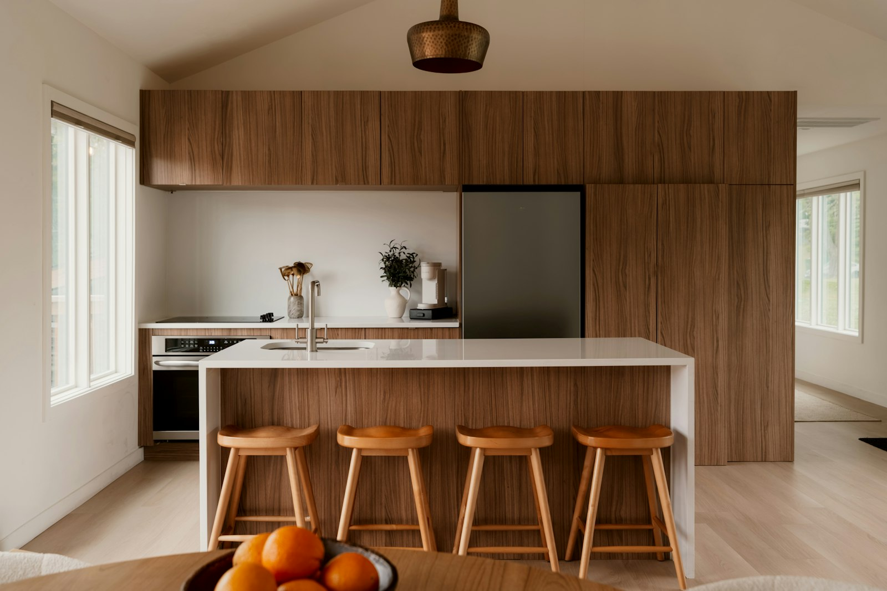
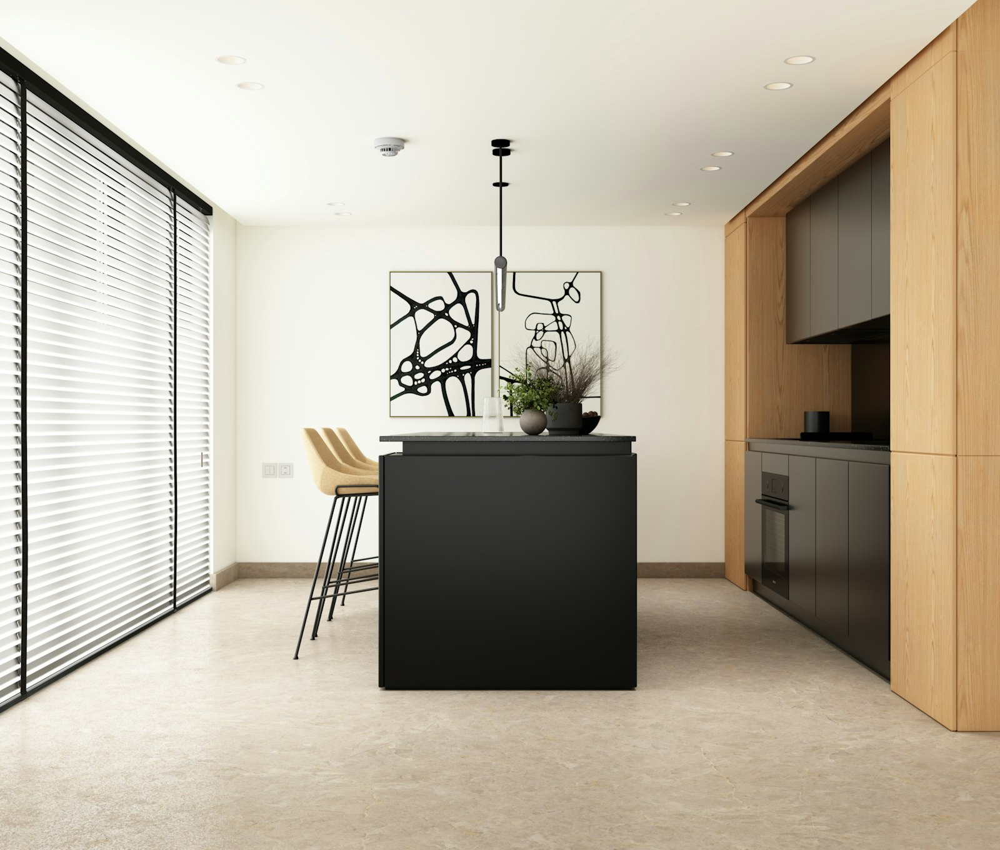

Servicio — Cocinas a medida
La cocina — el corazón de cada hogar.
Una cocina a medida, pensada desde cómo se cocina y se vive — no desde la planimetría. Concepto, material y montaje de la mano de un solo interlocutor, para una cocina que funciona hoy y sigue convenciendo dentro de veinte años.

Enfoque
La pared desaparece. La cocina se convierte en el centro.
Pasar de una cocina lineal cerrada a una isla de cocina abierta es uno de los deseos más frecuentes al planificar una nueva cocina a medida: más espacio para cocinar en pareja, un punto de encuentro natural para los invitados y una transición fluida hacia la zona de estar. Diseñamos tu isla con placa de cocción integrada, como superficie de trabajo y presentación, o como combinación de ambas.

Ejecución
Pensado sin tiradores. Hasta el último detalle.
Frentes lacados mate, cálida chapa de madera natural, sistemas sin tiradores con apertura push-to-open: el frente define el carácter de tu cocina. Desarrollamos junto a ti un concepto de frentes que encaje con tu hogar — cuidando cada detalle, desde la altura del panel hasta la transición con la encimera.

Material — Dekton
Dekton de Cosentino. La encimera que no teme a nada.
Sinterizado a más de 1.200 °C y por tanto prácticamente no poroso: una olla caliente recién retirada del fuego puede apoyarse sin salvamanteles, sin dañar el material. Además es resistente a los rayos UV y a las heladas — por lo que también es apto para cocinas exteriores — y está disponible en placas de gran formato para islas casi sin juntas.

Dekton — Tecnología
Cómo nace la piedra natural. En horas, no en milenios.
Materias primas como vidrio, cuarzo y porcelana se funden bajo presión extrema y a más de 1.200 °C en un material homogéneo y ultracompacto — un proceso que imita la formación natural de la roca, solo que enormemente acelerado. El resultado: una superficie prácticamente no porosa que no ofrece terreno fértil a las bacterias y de la que las manchas de vino tinto, aceite o limón se retiran con un simple gesto.

Dekton — Extremadamente versátil
No solo la encimera. Un material para dentro y fuera.
Dekton está disponible en más de 30 colores y acabados superficiales — desde aspecto mármol y hormigón hasta tonos metálicos puros — y no solo como encimera: también como panel trasero, frentes, o en la terraza como cocina exterior, gracias a su resistencia a la intemperie. Así se crea una imagen material continua, desde la zona de cocción hasta el exterior.

Electrodomésticos y técnica empotrada
Integrados, no añadidos. Una imagen de conjunto coherente.
Horno y horno a vapor a la altura de los ojos, una placa de inducción con extracción integrada, un frigorífico-congelador integrado sin frente visible: seleccionamos y coordinamos los electrodomésticos adecuados para tu día a día — ajustados a marca, comodidad de uso y eficiencia energética, no añadidos a posteriori.

Materiales & Calidad
Desde la laca del frente hasta el cuerpo del mueble. Cada material elegido con cuidado.
Además de Dekton, apostamos por la madera maciza para frentes cálidos y duraderos y por el cuarzo compacto como alternativa robusta para encimeras. Cada material se elige junto a ti según el uso, la estética y el presupuesto — resistente al calor, a las manchas y a los arañazos, pensado para durar décadas, no años.

Distribuciones de cocina de un vistazo
¿Qué distribución encaja con tu hogar?
Descubrimos juntos qué distribución de cocina encaja mejor con tu planimetría y tus hábitos al cocinar:
- En L — dos ejes de trabajo en ángulo recto, mucho espacio de almacenaje con recorridos cortos
- En U — tres ejes de trabajo rodean a quien cocina, máximo espacio de almacenaje para cocinas grandes
- Con isla — isla independiente como punto central de cocinas abiertas al salón
- En línea — todos los elementos a lo largo de una pared, ahorra espacio en plantas compactas

Sobre Richard Atelier
Human-Centered Living Design — con raíces en el oficio desde 1935.
El camino de Richard comienza en una tradición de carpintería vienesa, fundada en 1935 por Leopold Dobrohruschka y todavía viva hoy en su tercera generación. El diseño de Richard Atelier y la precisa ejecución artesanal de Tischlerkultur nacen de una misma mano coordinada — por eso, entre el primer boceto y la cocina terminada, nada se pierde por el camino. «Espacios que no solo se construyen, sino que se viven.» — Richard Dobrohruschka
Servicios de un vistazo
Un proyecto. Un único interlocutor.
El paquete de servicios de tu cocina a medida, de un vistazo:
- Concepto y análisis de la planimetría — recorridos, almacenaje, hábitos al cocinar
- Asesoramiento de materiales y frentes (madera maciza, cuarzo compacto, Dekton)
- Concepto de electrodomésticos, instalaciones e iluminación
- Coordinación de oficios y proveedores
- Responsabilidad de presupuesto y plazos — todo de la mano de un solo interlocutor
- MaterialesMadera maciza, cuarzo compacto, Dekton
- PropiedadesResistente al calor, higiénico, duradero
- AlcanceDesde el concepto hasta el montaje terminado
- SedesViena, Nueva York
Tu proyecto
Tu cocina también merece un concepto bien pensado.
Ya sea una sola hilera de muebles o una gran isla de cocina — Richard acompaña tu proyecto desde el primer trazo hasta el montaje terminado.
Enviar consulta ahora